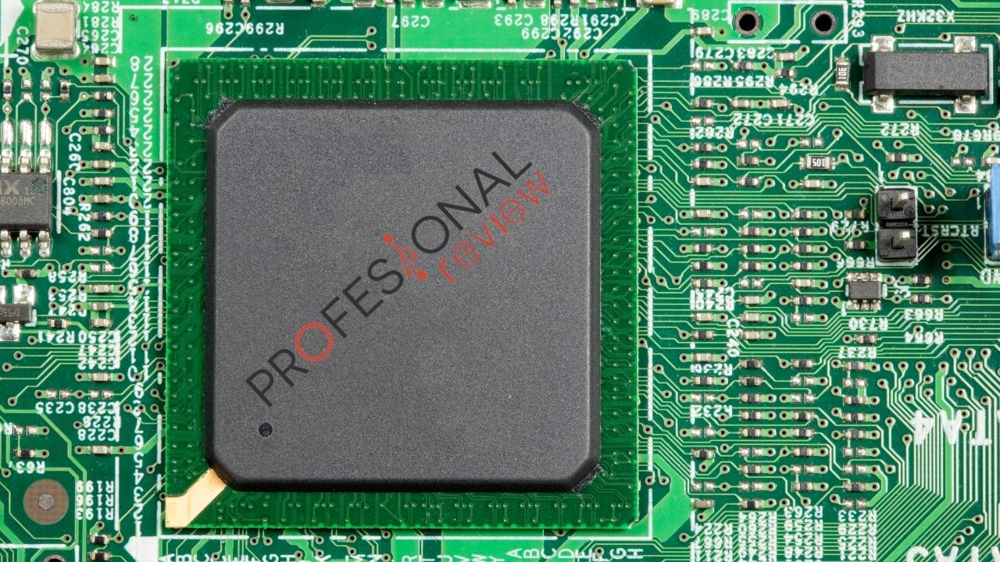
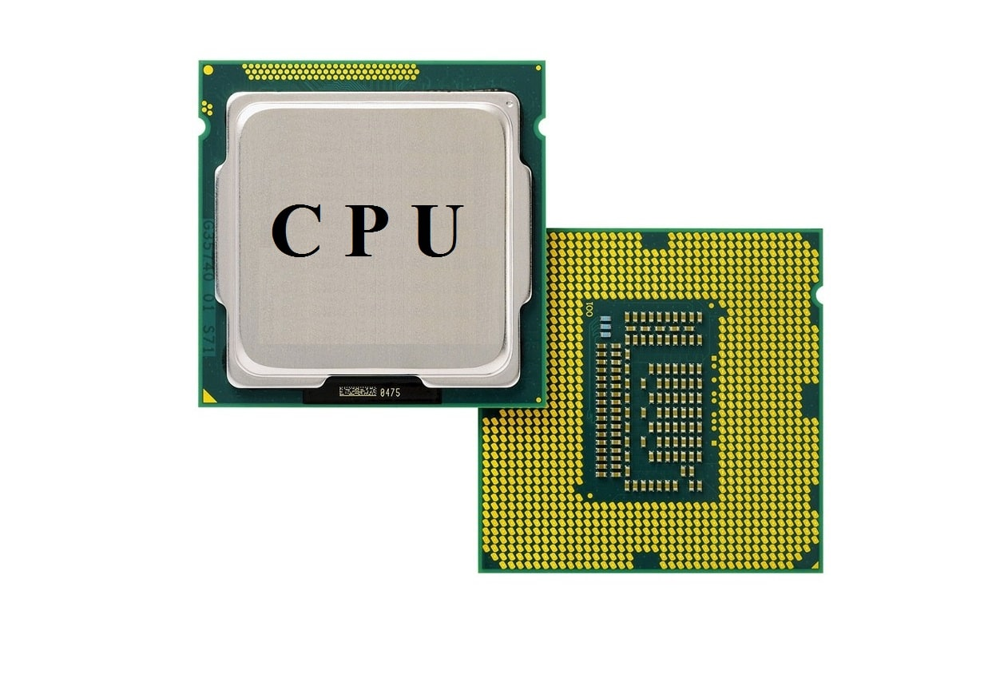

Un chipset es el conjunto de circuitos integrados diseñados con base en la
arquitectura de un procesador (en algunos casos, diseñados como parte integral
de esa arquitectura), permitiendo que ese tipo de procesadores funcionen en una
placa base. Sirven de puente de comunicación con el resto de componentes de la placa,
como son la memoria, las tarjetas de expansión, los puertos USB, ratón, teclado, etc.
Las placas base modernas suelen incluir dos integrados, denominados puente norte y puente sur,
y suelen ser los circuitos integrados más grandes después de la GPU y el microprocesador. Las últimas placa
base carecen de puente norte, ya que los procesadores de última generación lo llevan integrado.

FUNCIONAMIENTO
El chipset es el que hace posible que la placa base funcione como eje del sistema, dando soporte a varios componentes e interconectándolos de forma que se comuniquen entre ellos haciendo uso de diversos buses. Es uno de los pocos elementos que tiene conexión directa con el procesador, gestiona la mayor parte de la información que entra y sale por el bus principal del procesador, del sistema de vídeo y muchas veces de la memoria RAM. En el caso de los computadores PC, es un esquema de arquitectura abierta que establece modularidad: el chipset debe tener interfaces estándar para los demás dispositivos. Esto permite escoger entre varios dispositivos estándar, por ejemplo, en el caso de los buses de expansión, algunas tarjetas madre pueden tener bus PCI-Express y soportar diversos tipos de tarjetas de distintos anchos de bus (1x, 8x, 16x).
3.1.1 Unidad de procesamiento
La unidad central de procesamiento (siglas en inglés Central Processing Unit) es el hardware dentro de una computadora u otros dispositivos programables. Su trabajo es interpretar las instrucciones de un programa informático mediante la realización de las operaciones básicas aritméticas, lógicas y externas (provenientes de la unidad de entrada/salida). Su diseño y avance ha variado notablemente desde su creación, aumentando su eficiencia y potencia, y reduciendo aspectos como el consumo de energía y el costo.
Los componentes de la CPU son:
Unidad aritmético lógica (ALU): Realiza operaciones aritméticas y lógicas.
Unidad de control (CU): Dirige el tráfico de información entre los registros de la CPU y conecta con la ALU las instrucciones extraídas
de la memoria.
Registros internos: No accesibles (de instrucción, de bus de datos y bus de dirección) y accesibles de uso específico (contador programa, puntero pila, acumulador, flags, etc.) o de uso general.
UNIDAD ARITMÉTICO LÓGICA(ALU)
Realiza operaciones aritméticas y lógicas.
UNIDAD DE CONTROL(CU)
Dirige el tráfico de información entre los registros de la CPU y conecta con la ALU las instrucciones extraídas de la memoria.
REGISTROS INTERNOS
No accesibles (de instrucción, de bus de datos y bus de dirección) y accesibles de uso específico (contador programa, puntero pila, acumulador, flags, etc.) o de uso general.

3.1.2 Controlador del Bus
El controlador del bus se encarga de la frecuencia de funcionamiento y las señales de sincronismo, temporización y control. Está ubicado en un chip en la placa base.
El bus es la vía a través de la que se van a transmitir y recibir todas las comunicaciones, tanto internas como externas, del sistema informático. El bus es solamente un dispositivo de transferencia de información entre los componentes conectados a él, no almacena información alguna en ningún momento. Los datos, en forma de señal eléctrica, sólo permanecen en el bus el tiempo que necesitan en recorrer
la distancia entre los dos componentes implicados en la transferencia.
3.1.3 Puertos de Entrada/Salida
Un puerto de E/S es un enchufe en una computadora al que se conecta un cable. El puerto conecta la CPU a un dispositivo periférico a través de una interfaz de hardware o a la red a través de una interfaz de red. En otras palabras, un puerto de E/S es un punto de conexión que actúa como interfaz entre la computadora y dispositivos externos como mouse, impresora, módem, etc. Estos son de dos tipos:
PUERTO INTERNO
Conecta la placa base a dispositivos internos como unidad de disco duro, unidad de CD, módem interno, etc.
PUERTO EXTERNO
Conecta la placa base a dispositivos externos como módem, mouse, impresora, unidades flash, etc.
PUERTO SERIAL
Los puertos seriales transmiten datos secuencialmente un bit a la vez. Por lo tanto, solo necesitan un cable para transmitir 8 bits. Sin embargo, también los hace más lentos. Los puertos serie suelen ser conectores macho de 9 o 25 pines. También se conocen como puertos COM (comunicación) o puertos RS323C.
PUERTO PARALELO
Los puertos paralelos pueden enviar o recibir 8 bits o 1 byte a la vez. Los puertos paralelos vienen en forma de pines hembra de 25 pines y se utilizan para conectar impresoras, escáneres, unidades de disco duro externas, etc.
PUERTO USB
USB son las siglas de Universal Serial Bus. Es el estándar de la industria para la conexión de datos digitales de corta distancia. El puerto USB es un puerto estandarizado para conectar una variedad de dispositivos como impresora, cámara, teclado, altavoz, etc.
PUERTO PS/2
PS/2 son las siglas de Personal System/2. Es un puerto estándar hembra de 6 pines que se conecta al cable mini-DIN macho. IBM introdujo PS/2 para conectar el mouse y el teclado a las computadoras personales. Este puerto ahora está casi obsoleto, aunque algunos sistemas compatibles con IBM pueden tener este puerto.
PUERTO DE INFRARROJOS
El puerto de infrarrojos es un puerto que permite el intercambio inalámbrico de datos en un radio de 10 m. Dos dispositivos que tienen puertos infrarrojos se colocan uno frente al otro para que los haces de luces infrarrojas se puedan utilizar para compartir datos.
PUERTO BLUETOOTH
Bluetooth es una especificación de telecomunicaciones que facilita la conexión inalámbrica entre teléfonos, computadoras y otros dispositivos digitales a través de una conexión inalámbrica de corto alcance. El puerto Bluetooth permite la sincronización entre dispositivos habilitados para Bluetooth.
PUERTO FIREWIRE
FireWire es el estándar de interfaz de Apple Computer para permitir la comunicación de alta velocidad mediante bus serie. También se llama IEEE 1394 y se usa principalmente para dispositivos de audio y video como videocámaras digitales
3.1.4 controlador de interrupciones.
El controlador de interrupciones es un módulo que tiene por función gestionar las
interrupciones de entrada/salida para el procesador. Esto ahorra diseñar lógica y
añadir patitas al procesador. También proporciona flexibilidad porque permite idealmente,
gestionar un número ilimitado señales de interrupción (favoreciendo la expansión del
sistema de entrada/salida). El controlador recibe el conjunto de señales de interrupción
procedentes de los dispositivos, toma la decisión de cuál es la más prioritaria, y envía
una única señal al procesador. La respuesta del procesador es transmitida al dispositivo
y el propio controlador se encarga de depositar en el bus el vector de la interrupción.
En un sistema basado en la familia de procesadores 8086, esta labor la realiza el chip 8259. Este chip admite hasta 8 señales de interrupción, pero también admite ser configurado en cascada (sus entradas proceden a su vez de otro controlador) de modo que un conjunto de controladores 8259 pueden gestionar hasta un máximo de
8 x 8 señales de interrupción procedentes de otros tantos dispositivos de entrada/salida.
CICLO DE RECONOCIMIENTO DE INTERRUPCIÓN.
1. Tras la activación de una línea IR, el controlador activa la salida INTR señalándole a la CPU la existencia de una interrupción activada.
2. Al recibir la señal, el procesador da un pulso en su salida INTA indicando que comienza un ciclo de reconocimiento de interrupción.
3. Al recibir el controlador el pulso por su entrada INTA comienza a arbitrar las interrupciones recibidas y selecciona la más prioritaria.
4. Se emite un segundo pulso por la línea INTA del procesador (o controlador de bus) que utiliza el controlador para depositar en el bus el vector correspondiente a la interrupción de mayor prioridad.
5. El procesador obtiene la dirección de la rutina de interrupción a partir de este dato y salta a ella. Almacena el registro de flags y la dirección de retorno, deshabilita las interrupciones y comienza a ejecutar la rutina
3.1.5 controlador de acceso directo a memoria
El mecanismo de acceso directo a memoria está controlado por un chip específico,
el DMAC ("DMA Controller"), que permite realizar estos intercambios sin apenas
intervención del procesador. En los XT estaba integrado en un chip 8237A que
proporcionaba 4 canales de 8 bits (puede mover solo 1 Byte cada vez); sus direcciones
de puerto son 000–00Fh. Posteriormente en los AT se instalaron dos de estos integrados y
las correspondientes líneas auxiliares en el bus de control.
En contra de lo que podría parecer, el resultado no fue disponer de 8 canales, porque el segundo controlador se colgó en “Cascada” de la línea 4 del primero. Los canales del segundo DMAC está asignado a las direcciones 0C0–0DFh y son de 16 bits.Pueden mover 2 Bytes (de posiciones contiguas) cada vez. Cada canal tiene asignada una prioridad para el caso de recibirse simultáneamente varias peticiones (los números más bajos tienen prioridad más alta).
Pueden ser utilizados por cualquier dispositivo que los necesite (suponiendo naturalmente que esté diseñado para soportar este modo de operación). Cada sistema los asigna de forma arbitraria, pero hay algunos cuya asignación es estándar.
3.1.6 circuitos de temporizacion
El circuito electrónico que más se utiliza tanto en la industria como en circuitería comercial, es el circuito temporizador o de retardo, dentro de la categoría de temporizadores, cabe destacar el más económico y también menos preciso consistente en una resistencia y un condensador, a partir de aquí se puede contar con un sinfín de opciones.
Un temporizador básicamente consiste en un elemento que se activa o desactiva después de un tiempo preestablecido.
De esta manera podemos determinar el parámetro relacionado con el tiempo que ha de transcurrir para que el circuito susceptible de temporizarse, se detenga o empiece a funcionar o simplemente cierre un contacto o lo abra.
Se encuentra en la placa base de la PC y que es capaz de mantener una cuenta de tiempo basada en el reloj de la computadora. Puede usarse para calcular el intervalo entre dos mediciones de tiempo o para generar pausas. Este chip tiene la capacidad de realizar diferentes funciones de conteo. Es útil para medir el tiempo que dura cierto proceso
o para mantener actualizadas la hora del día y la fecha si se deja la PC conectada y encendida.
3.1.7 Circuitos de control
Es una red secuencial que acepta un código que define la operación que se va a ejecutar y luego prosigue a través de una secuencia de estados, generando una correspondiente secuencia de señales control.
Estas señales de control incluyen el control de lectura-escritura y señales de dirección de memoria válida en el bus de control del sistema. Otras señales generadas por el controlador se conectan a la ALU y a los registros internos del procesador para regular
el flujo de información en el procesador y desde los buses de dirección y de datos del sistema.
3.1.8 Controladores de video
La tarjeta de video, (también llamada controlador de video), es un componente electrónico requerido para generar una señal de video que se manda a una pantalla de video por medio de un cable. La tarjeta de video se encuentra normalmente en la placa de sistema de la computadora o en una placa de expansión. La tarjeta gráfica reúne toda la información que debe visualizarse en pantalla y actúa como interfaz entre el procesador y el monitor;
la información es enviada a éste por la placa luego de haberla recibido a través del sistema de buses.
Una tarjeta gráfica se compone, básicamente, de un controlador de video, de la memoria de pantalla o RAM video, y el generador de caracteres, y en la actualidad también poseen un acelerador de gráficos. El controlador de video va leyendo a intervalos la información almacenada en la RAM video y la transfiere al monitor en forma de señal de video; el número de veces por segundo que el contenido de la RAM video es leído y transmitido
al monitor en forma de señal de video se conoce como frecuencia de refresco de la pantalla
3.2 Aplicaciones
En informática, un periférico de entrada/salida o E/S (en inglés: input/output o I/O) es aquel tipo de dispositivo periférico de un computador capaz de interactuar con los elementos externos a ese sistema de forma bidireccional, es decir, que permite tanto que sea ingresada información desde un sistema externo, como emitir información a partir de ese sistema. Los Dispositivos Periféricos de entrada son todos aquellos dispositivos que permiten introducir datos o información en una computadora para que esta los procese u ordene.
Funciones:
Un periférico de E/S es el que se utiliza para ingresar (E) datos a la computadora, y luego de ser procesados por la unidad central de procesamiento (CPU), genera la salida (S) de información. Su función es leer o grabar, permanente o virtualmente, todo aquello que se haga con la computadora, para que pueda ser utilizado por los usuarios u otros sistemas.
Tipos:
Dispositivos o periféricos de comunicación entre computadoras, tales como módems y tarjetas de red, por lo general sirven para entrada y salida. También, los dispositivos de almacenamiento de datos, como los discos rígidos, la unidad de estado sólido, las memorias flash, las disqueteras, entre otros, se pueden considerar periféricos de entrada/salida.
3.2.1 Entrada/Salida
El papel que juegan los dispositivos periféricos de la computadora es esencial; sin tales dispositivos ésta no sería totalmente útil. A través de los dispositivos periféricos podemos introducir a la computadora datos que nos sea útiles para la resolución de algún problema y por consiguiente obtener el resultado de dichas operaciones, es decir; poder comunicarnos con la computadora. La computadora necesita de entradas para poder generar salidas y éstas se dan a través de dos tipos de dispositivos periféricos existentes:
DISPOSITIVOS PERIFÉRICOS DE ENTRADA
Los periféricos de entrada son aquellos que se utilizan para proporcionar datos y señales a la unidad de procesamiento. Suele hacerse una clasificación de acuerdo a la modalidad de entrada, o bien de acuerdo a si la entrada tiene carácter discreto o continuo. Algunos de ellos son, el teclado, mouse, escáner, cámara web, micrófono y lector de CD/DVD.
DISPOSITIVOS PERIFÉRICOS DE SALIDA
Son capaces de reproducir lo que ocurre en la computadora para el interés del usuario. La CPU genera patrones de bits internos, y son estos dispositivos los encargados de hacerlos comprensibles para el usuario. Algunos de estos son, el monitor, impresora, auriculares, tarjeta de sonido y tarjeta de voz.
3.2.2 Almacenamiento
Una fuente de alimentación es un componente esencial de cualquier dispositivo electrónico ya que es ella quien se encarga de darle vida. En cualquier equipo, por pequeño que sea, siempre hay una fuente de alimentación, aunque no la veamos.
En los ordenadores de sobremesa, la fuente de alimentación se encuentra generalmente en la parte inferior de la torre (en cajas antiguas se encuentra en la superior), y muchas cajas de ordenador optan por incorporar un compartimento para separarla del resto y ya de paso ocultar todos los cables salientes de ella.
Una fuente de alimentación sirve para dar energía a un dispositivo electrónico.
Siguiendo con el tema de los ordenadores de sobremesa, la fuente de alimentación da energía a la placa base, CPU, tarjetas gráficas, HDDs, SSDs, ventiladores, lectores de CDs. En resumen, alimenta a todo lo que necesite energía, para ello hace uso de diferentes tipos de cables.
Las fuentes de alimentación proporcionan energía a los SSD y HDD mediante conectores SATA de energía, y a los ventiladores mediante conectores molex de 3 o 4 pines o bien mediante la propia placa base (que es alimentada con el conector de 24 pines ATX). De esta manera, todos los componentes reciben energía de la fuente de alimentación.
Además, las fuentes protegen a todos los componentes mediante una gran cantidad de sistemas dedicados a ello.
Existen fuentes de alimentación que no requieren de ventilación, por lo que su refrigeración es completamente pasiva.
Estos modelos suelen ser fuentes de medio-bajo voltaje con una alta eficiencia, para que el calor generado sea menor y se pueda llevar a cabo su disipación sin usar ni un solo ventilador acoplado a la fuente, con los que existan en la caja serán más que suficiente.
3.2.3 Fuentes de alimentación
La fuente de poder o de alimentación es un dispositivo que se monta en el gabinete de la computadora y que se encarga básicamente de transformar la corriente alterna de la línea eléctrica comercial en corriente directa; la cuál es utilizada por los elementos electrónicos y eléctricos de la computadora. Otras funciones son las de suministrar la cantidad de corriente y voltaje que los dispositivos requieren así como protegerlos de subidas de problemas en el suministro eléctrico como subidas de voltaje.
TIPOS DE FUENTES
FUENTE DE PODER AT
AT son las siglas de ("Advanced Technology") ó tecnología avanzada, que se refiere a un estándar de dispositivos introducidos al mercado a inicios de los años 80´s que reemplazo a una tecnología denominada XT ("eXtended Technology") ó tecnología extendida.
FUENTE DE PODER ATX
ATX son las siglas de ("Advanced Technology eXtended") ó tecnología avanzada extendida, que es una segunda generación de fuentes de alimentación introducidas al mercado para computadoras con microprocesador Intel® Pentium MMX, y a partir de ese momento, se extiende su uso. La serie MVP es la familia más versátil de fuentes de alimentación de potencia media que utiliza componentes magnéticos de SMD y convertidos DC-DC internos, combinados con módulos PFC, que pueden ser configurables desde 1 hasta 10 tensiones de salida con valores entre 2 y 60 v. tiene todas las homologaciones de seguridad necesarias y es un producto marcado “CE”.
3.3 Ambientes de servicio
El negocio de proveer servicios de datos es mucho más complejo que la forma en la que se dan los tradicionales servicios, que con frecuencia se terminan involucrando o necesitando la colaboración de terceras empresas.
- Desarrollo de nuevos mercados y productos
- Adquisición y administración de clientes
- Administración del negocio
- Administración del negocio
3.3.1 Negocios
La evolución histórica de la herramienta computacional, en su impacto sobre los diferentes bloques del proceso administrativo, ubicados en el tiempo desde los modelos lineales y aislados hasta las aplicaciones de teoría de sistemas que caracterizan la informática administrativa de nuestros días y del futuro inmediato. Definitivamente, la tecnología en general ha sido la causa principal y la acción más directa para la transformación del trabajo de las organizaciones. Como lo son (computadores, teléfonos, videos, grabadoras, etc.), como los programas y sistemas de información y comunicación en general, han incrementado enormemente la productividad y eficiencia de las organizaciones. Podemos dividir la evolución del uso de las computadoras en los negocios en cuatro períodos:
- eríodo introductorio, o Primera Generación, que va de 1940 a 1955.
- Período de multiplicación, o Segunda Generación, que va de 1955 a 1965.
- Período de sofisticación, o Tercera Generación, de 1965 a 1980.
- Período de madurez, de 1980 hasta nuestros días. Esta Cuarta Generación, también puede denominarse «Era de la Información».
3.3.2 Industria
La industrialización de los servicios de tecnología de información va a redefinir el mercado en términos de como las organizaciones evalúan, compran y seleccionan los servicios y como los vendedores desarrollan y establecen precios de los servicios.
Para lograr esta estandarización, se requiere un enfoque hacia las soluciones genéricas y esto debe ser responsabilidad de los proveedores, que deben de desarrollar, operar y administrar el resultado de estos genéricos de TI.
Aunque los servicios de TI están en proceso de madurez, la madurez de la industria se ha incrementado en aspectos evidentes, como la forma en que los servicios son implementados y administrados.
3.3.3 Comercio electrónico
El desarrollo de estas tecnologías y de las telecomunicaciones ha hecho que los intercambios de datos crezcan a niveles extraordinarios, simplificándose cada vez más y creando nuevas formas de comercio, y en este marco se desarrolla el Comercio Electrónico.
Se considera “Comercio Electrónico” al conjunto de aquellas transacciones comerciales y financieras realizadas a través del procesamiento y la transmisión de información, incluyendo texto, sonido e imagen.